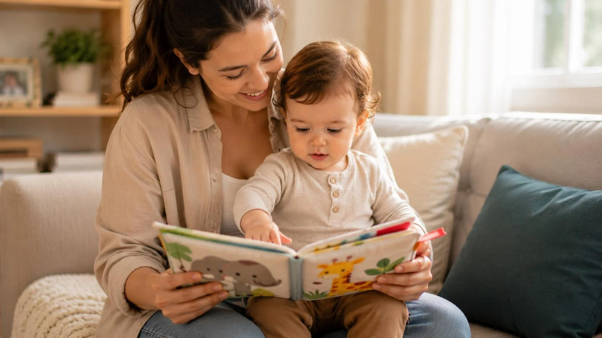

Mengasuh dengan hangat, membimbing tanpa menghakimi.
TemanParenting menemani ayah dan ibu belajar positive parenting — pendekatan pengasuhan yang tegas sekaligus hangat — lewat materi singkat yang disusun mengikuti tahap perkembangan anak usia 0–18 tahun.

Kebutuhan anak berubah, cara mengasuh ikut menyesuaikan
Setiap kelompok usia punya tugas perkembangan yang berbeda. Materi TemanParenting dikelompokkan agar orang tua membaca yang paling relevan dengan fase anaknya saat ini — dengan prioritas pada usia balita (0–5 tahun).
Empat prinsip positive parenting
Seluruh materi di TemanParenting berdiri di atas empat prinsip ini — bukan sekadar teknik, melainkan cara memandang anak.
Koneksi sebelum koreksi
Anak yang merasa terhubung lebih mudah menerima arahan. Dekati dan tenangkan dulu, baru bahas perilakunya — bukan sebaliknya.
Tegas sekaligus hangat
Batas yang jelas bukan musuh kelembutan. Aturan disampaikan dengan nada tenang, alasan yang masuk akal, dan konsistensi.
Emosi diakui, perilaku dibimbing
Marah, sedih, dan kecewa boleh dirasakan; memukul atau merusak yang tidak boleh. Memisahkan keduanya membuat anak tidak merasa ditolak sebagai pribadi.
Teladan lebih keras dari nasihat
Anak meniru cara orang tuanya mengelola emosi, meminta maaf, dan menyelesaikan konflik. Mengasuh dimulai dari mengatur diri sendiri.
Mulai dari yang paling sering dicari orang tua
Kenali pola respons Anda dalam 5 situasi sehari-hari
Kuis singkat ini membantu orang tua merefleksikan respons yang biasa muncul saat menghadapi perilaku anak — tanpa nilai benar-salah dan tanpa menghakimi. Hasilnya berupa gambaran umum untuk bahan refleksi, bukan diagnosis.
Bacaan ringan untuk sela-sela hari
“Anak tidak membutuhkan orang tua yang sempurna. Anak membutuhkan orang tua yang hadir, mau mendengar, dan berani memperbaiki ketika keliru.”— Prinsip pengasuhan yang dipegang TemanParenting